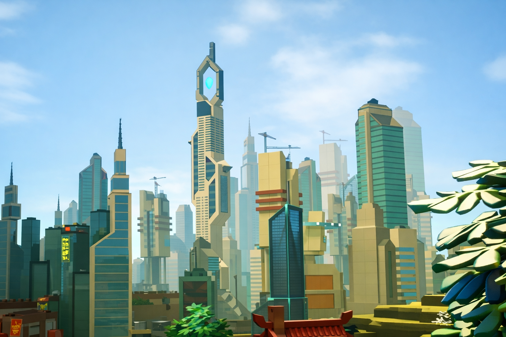
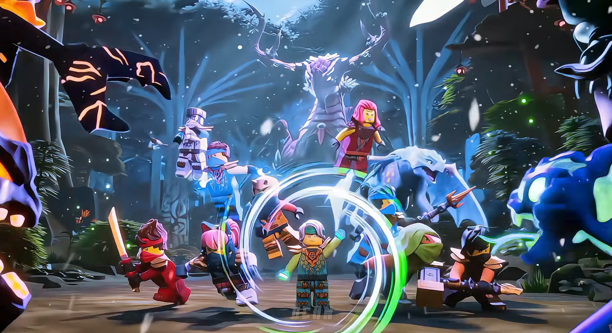

About Ninjago
Ninjago is a LEGO fantasy action-adventure franchise that began in 2011 with Ninjago: Masters of Spinjitzu. It follows a team of ninja—Kai, Jay, Cole, Zane, Nya, and Lloyd—who protect the world of Ninjago from powerful villains and supernatural threats under the guidance of Master Wu. Over the years, the franchise has grown through many seasons, characters, LEGO sets, and stories, continuing today with Ninjago: Dragons Rising.
Ninjago is a LEGO fantasy adventure franchise that began in 2011. It follows six ninja—Kai, Jay, Cole, Zane, Nya, and Lloyd— as they protect Ninjago from powerful villains under the guidance of Master Wu. The story continues today with Ninjago: Dragons Rising.

Meet The Characters
Ninjago is home to a huge cast of memorable ninjas, masters, allies, and villains. The main ninja team includes Kai, Jay, Cole, Zane, Nya, and Lloyd, each with their own unique elemental powers, personalities, and weapons. They are guided by Master Wu, while Garmadon has been both a powerful enemy and an important ally throughout the story. Other important characters include Misako, Pixal, Dareth, Skylor, Sensei Garmadon, and Ronin. Ninjago has also introduced many powerful villains and rivals, including Harumi, Pythor, Overlord, Chen, Morro, Nadakhan, Acronix, Krux, Aspheera, Unagami, Wojira, and the Crystal King. In Dragons Rising, new heroes such as Arin, Sora, and Riyu join the ninja as they face new threats and explore a merged world filled with dragons, elemental powers, and mysterious realms.
Ninjago has many memorable ninjas, allies, and villains. The main team includes Kai, Jay, Cole, Zane, Nya, and Lloyd, each with their own powers and personalities. They are guided by Master Wu and face dangerous enemies throughout their adventures. In Dragons Rising, heroes like Arin, Sora, and Riyu join the team.

Lloyd Tribute
Lloyd Garmadon is the legendary Green Ninja and one of the most important characters in Ninjago. From a young and inexperienced ninja to a powerful Master of Spinjitzu, Lloyd has grown through countless battles and challenges. As the son of Garmadon and the student of Master Wu, he has carried the responsibility of protecting Ninjago and standing beside his fellow ninja. His courage, determination, and willingness to sacrifice himself for others have made him a true leader and hero. From facing powerful enemies to mastering his energy powers, Lloyd's journey remains one of the most memorable stories in the world of Ninjago.
Lloyd Garmadon is the legendary Green Ninja and one of Ninjago's greatest heroes. He grew from an inexperienced young ninja into a powerful Master of Spinjitzu and leader. As Garmadon's son, Lloyd has faced countless battles while protecting Ninjago and his friends.
Recent News
Ninjago: Dragons Rising Season 4 Part 2 is finally approaching, bringing the next chapter of the ninja's journey to fans. After the events of Season 4 Part 1, the ninja are preparing to face new challenges, powerful enemies, and unexpected twists. The upcoming episodes will continue the stories of Lloyd, Kai, Cole, Zane, Nya, Sora, and Arin as they fight to protect the merged realms. With new battles, mysteries, dragons, and elemental powers on the way, Part 2 is set to deliver another exciting chapter of Dragons Rising. Get ready for the release of Season 4 Part 2 and everything it has in store!
Dragons Rising Season 4 Part 2 is approaching, continuing the ninja's journey after Part 1. Lloyd, Kai, Cole, Zane, Nya, Sora, and Arin will face new enemies, battles, and mysteries across the merged realms.
